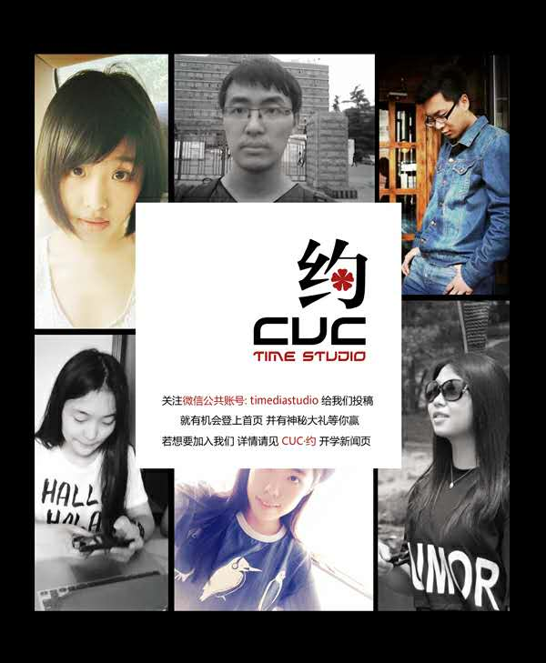

<ion-view view-title="{{news.title}}">
  <ion-content class="padding">
    <div class="row responsive-sm">
      
      <div class="col">
        <h3 style="text-align :center" ng-bind="news.title"></h3>
        <p style="text-align :center;color:gray">来源：{{news.source}}<br>发布时间：{{news.time}}</p>
      </div>
    </div>
    <div ng-bind-html="newsHtml"></div>
    <div class="list card">

      <div class="item">
        <h2>团队介绍</h2>
      </div>

      <div class="item item-body">
        
        <p>
          CUC团队目前有六名成员：满弘鹏、邢宛莺、李涛、陈晓惠、孙思源、王晓薇，
		  均为来自中国传媒大学的2013级在校生。"CUC约"是一款致力于校园社交的
		  app，以为在校生服务为宗旨。该app现阶段以web app的形式为依托，分析在校生的
		  需求，通过对注册用户的认证，保证每一名注册用户均为在校生。“CUC约”团队努力
		  打造一款集多种功能为一体的“校园版”朋友圈，让“陌生”的同学间不再有距离。目前
		  该项目正在开发过程中，我们诚邀同为传媒大学的你加入我们，一同享受创业的乐趣。
        </p>
        <h3>加入我们</h3>
        <p>联系邮箱：founder_man@cucyue.com</p>
        <p>联系电话：13021224944</p>
        <p>微信公众号：搜索timediastudio或者扫描二维码：</p>
		
      </div>
    </div>
  </ion-content>
</ion-view>
